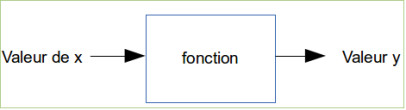
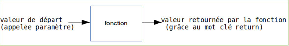

Les fonctions permettent de décomposer un programme complexe en une série de sous-programmes plus simples. De plus, les fonctions sont réutilisables : si nous disposons d'une fonction capable de calculer une racine carrée, par exemple, nous pouvons l'utiliser un peu partout dans notre programme sans avoir à la réécrire à chaque fois.
La notion de fonction en informatique est comparable à la notion de fonction en mathématiques.
Si nous avons y = 3x+2, pour une valeur donnée de x, nous aurons une valeur de y.
Exemple : x=4 donc y= 14 (y = 3.4+2=14, attention ici le point correspond au signe "multiplié").
La fonction en informatique est basée sur la même idée :
Voici la syntaxe employée en Java (Processing) (quelque soit le langage, le principe est le même), la définition d'une fonction est la suivante :
type_valeur_retour nomDeLaFonction (type_paramètre paramètre) {
instructions qui composent la fonction
return y
}
La fonction retournera la valeur contenue dans la variable y. Cette valeur aura pour type "type_valeur_retour".
Codons notre exemple (y=3x+2) en créant une fonction "fct" (cette fonction renverra une valeur de type int et prendra un paramètre (x) lui aussi de type int) :
int fct (int x) {
int y;
y=3*x+2;
return y;
}
Pour "utiliser" (exécuter) la fonction "fct", il suffit d'écrire :
fct (4)
dans ce cas précis, notre fonction renverra le nombre 14
Il faut savoir qu'au moment de l'exécution de votre programme le code "fct(4)" sera systématiquement remplacé par la valeur retournée par la fonction (toujours dans notre exemple le "fct(4)" sera remplacé par le nombre 14).
Une fonction ne retourne pas forcément de valeur (le mot clé return n'est pas obligatoire). Quand une fonction ne retourne rien, il faut faire précéder le nom de la fonction du mot "void" :
void nomDeLaFonction (int x) {
instructions qui composent la fonction
}
Mais si une fonction ne retourne pas de valeur, que fait-elle ?
Elle peut faire plein de choses, par exemple une fonction peut tout simplement afficher un texte :
void maFonction (int x) {
println("Le code est "+x);
}
"maFonction(12)" permettra d'afficher dans la console de Processing : "Le code est 12".
Une fonction ne prend pas forcément de paramètre (il faut laisser les parenthèses vides) :
void maFonction () {
println("Hello World !");
}
ou encore
String maFonction () {
String y;
y="Hello World";
return y;
}
Dans ces 2 cas, pour appeler la fonction, il faudra écrire :
maFonction();
Il est possible de faire passer plusieurs paramètres à une fonction.
int uneAutreFonction (int x,int b) {
int y;
y=3*x+b ;
return y;
}
Avant de passer à la pratique, nous allons devoir ouvrir une petite parenthèse :
Processing propose 2 fonctions que le programmeur devra compléter : la fonction "setup" et la fonction "draw" (que nous étudierons dans une prochaine activité).
La fonction "setup" (qui ne retourne rien), sera appelée automatiquement au lancement du programme. Pour des raisons internes à Processing que je n'expliquerai pas ici, tous les appels à des fonctions créées par le programmeur devront être effectués depuis la fonction "setup".
En résumé, si vous écrivez :
void maFonction () {
println("Hello World !");
}
maFonction();
vous aurez le droit à un message d'erreur. Pour que cela fonctionne, il faudra écrire :
void maFonction () {
println("Hello World !");
}
void setup(){
maFonction();
}
Cela sera la même chose pour toutes les fonctions créées par le programmeur :
String maFonction () {
String y;
y="Hello World !";
return y;
}
void setup(){
println(maFonction());
}
ou encore :
int uneAutreFonction (int x,int b) {
int y;
y=3*x+b ;
return y;
}
void setup(){
println("Le résultat est "+uneAutreFonction (5,4));
}
N'oubliez pas que dans l'exemple ci-dessus, l'appel à la fonction "uneAutreFonction (5,4)" sera, au moment de l'exécution du programme, remplacé par la valeur retournée par la fonction (19 dans l'exemple ci-dessus)
Saisissez, analysez et testez ce programme :
void placerPoint (int r,int v, int b, int x, int y) {
stroke(r,v,b);
point(x,y);
}
void setup(){
for (int i=0;i<1000;i=i+1){
int rouge;
int vert;
int bleu;
int posX;
int posY;
rouge=int(random(256));
vert=int(random(256));
bleu=int(random(256));
posX=int(random(101));
posY=int(random(101));
placerPoint(rouge,vert,bleu,posX,posY);
}
}